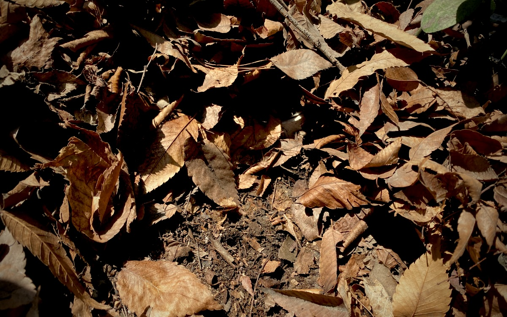
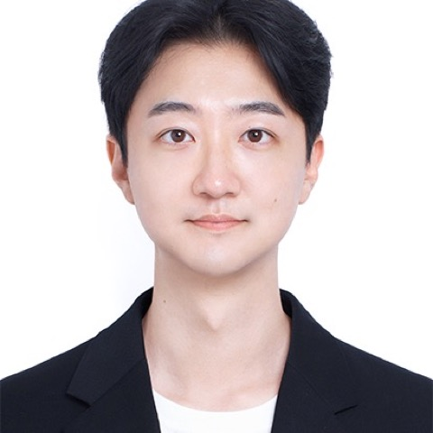
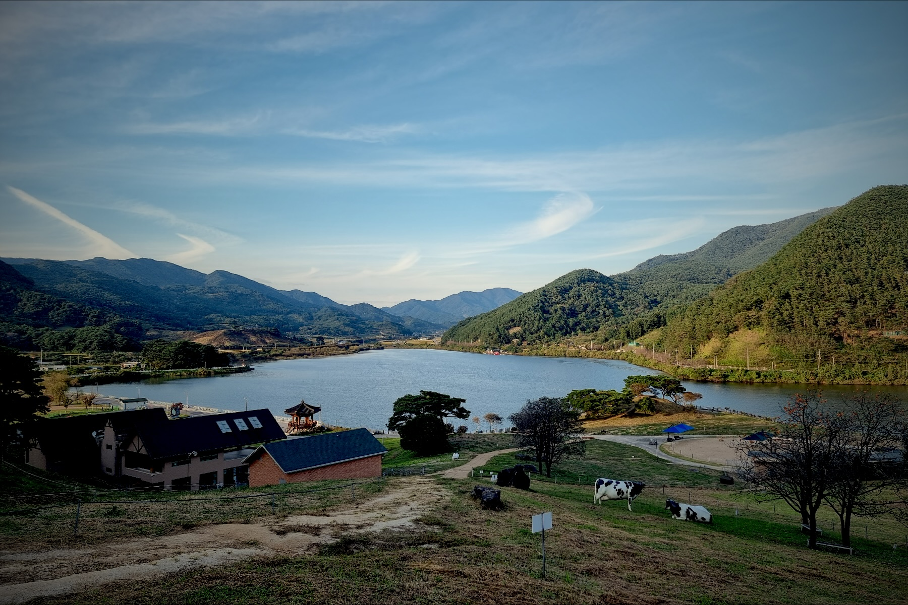
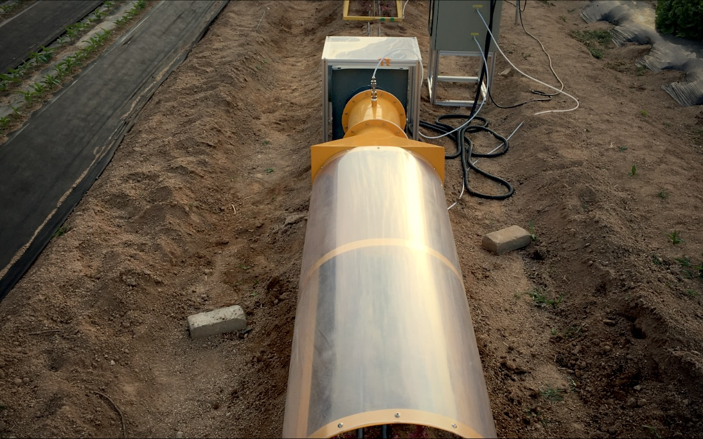
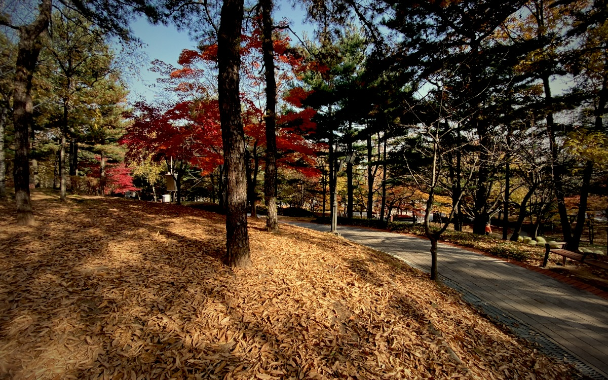
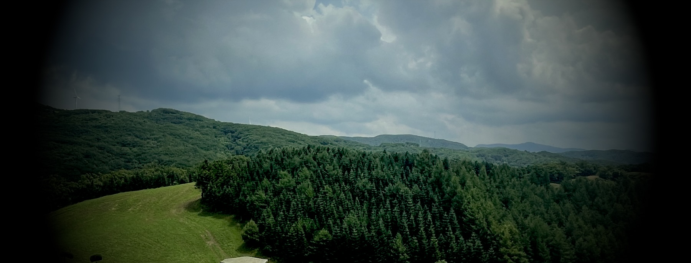

01
Mineral controls on soil carbon persistence
A mineral-informed soil carbon model that links reactive mineral phases to the turnover of soil organic carbon, evaluated against radiocarbon and fraction data (ISRaD) at global scale.

Postdoctoral Researcher, Korea Institute of Science and Technology (KIST)
Center for Climate and Carbon Cycle Research · Seoul, Korea
I study how soils hold on to carbon, and for how long.

I am a soil scientist working on how soils store carbon and for how long. My current work at KIST builds process-based soil carbon models that use mineralogy (reactive Fe and Al phases, clay) to predict the persistence of soil organic carbon, building on a year at Yale University with Eric Slessarev.
Before that, at Kyung Hee University, I worked on national-scale soil carbon assessment with modified RothC models, on low-cost measurement–reporting–verification (MRV) for soil-based carbon dioxide removal, and on urban soils and the ecosystem services they provide. I use process-based and data-driven models together with field and laboratory measurements of soil carbon fractions, greenhouse-gas fluxes and microbial properties.

A mineral-informed soil carbon model that links reactive mineral phases to the turnover of soil organic carbon, evaluated against radiocarbon and fraction data (ISRaD) at global scale.

Low-cost MRV for soil-based carbon dioxide removal (Sejong Science Fellowship, 2024–2028, PI), building on national-scale assessments of how management changes soil carbon stocks.

How land use and management reshape soil carbon and nitrogen: from conservation tillage and biochar in croplands to constructed urban soils and the ecosystem services they provide.

Peer-reviewed journal articles · Google Scholar